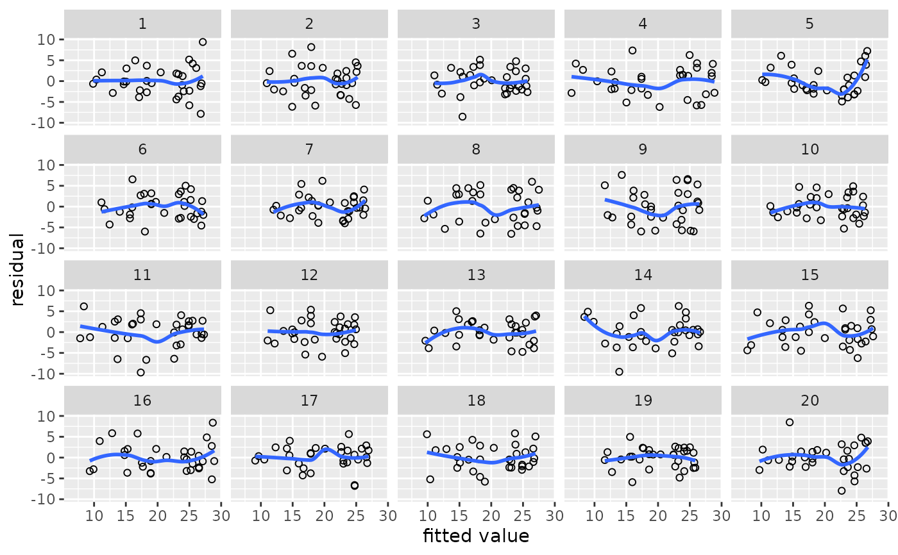
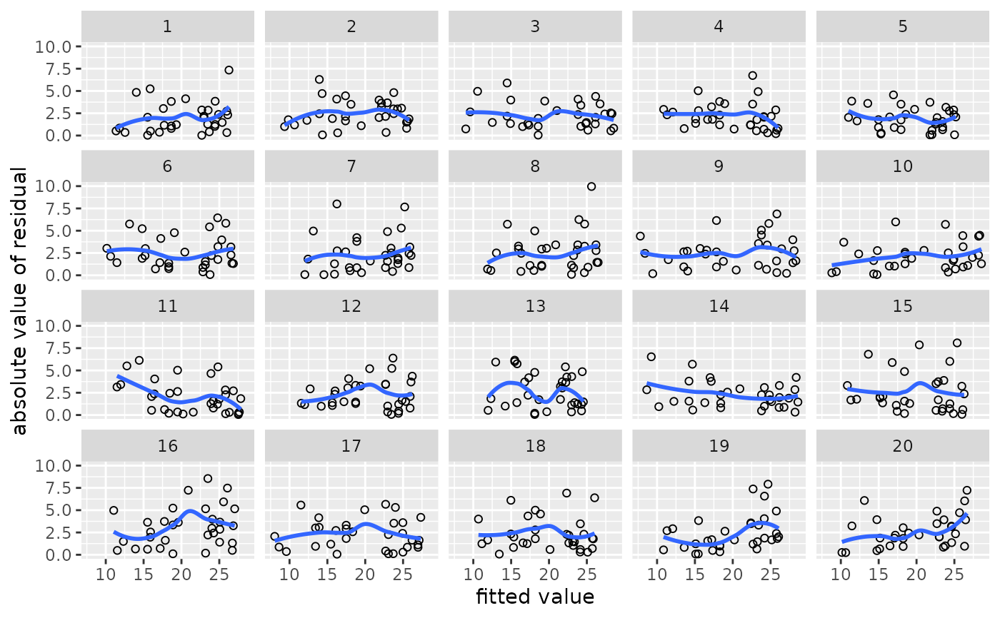
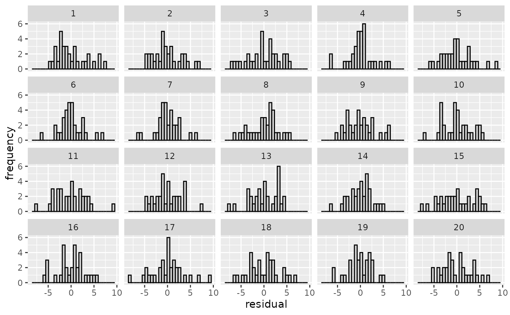
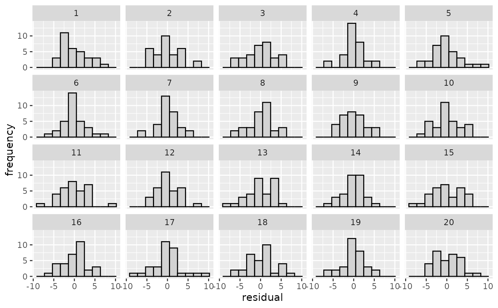
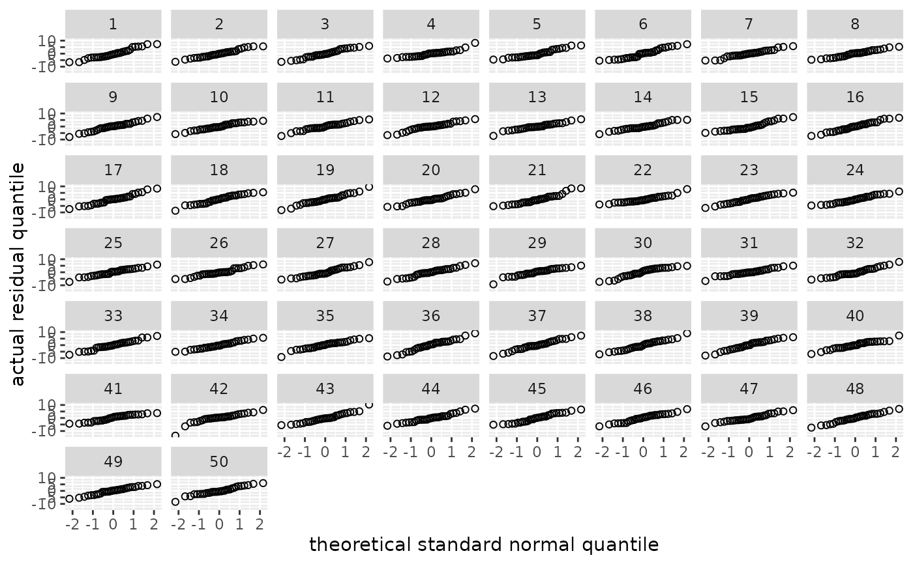
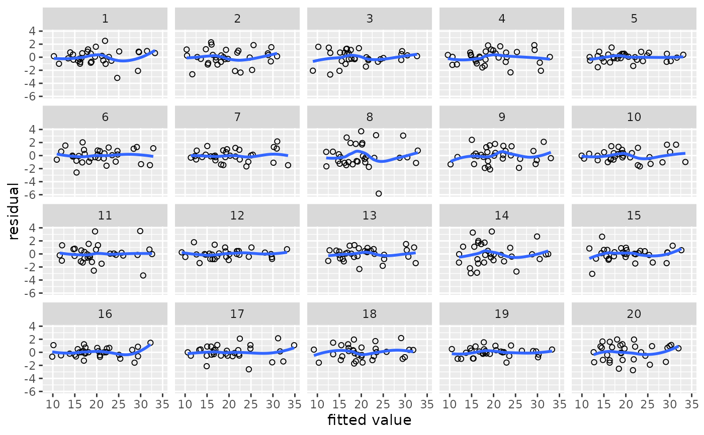
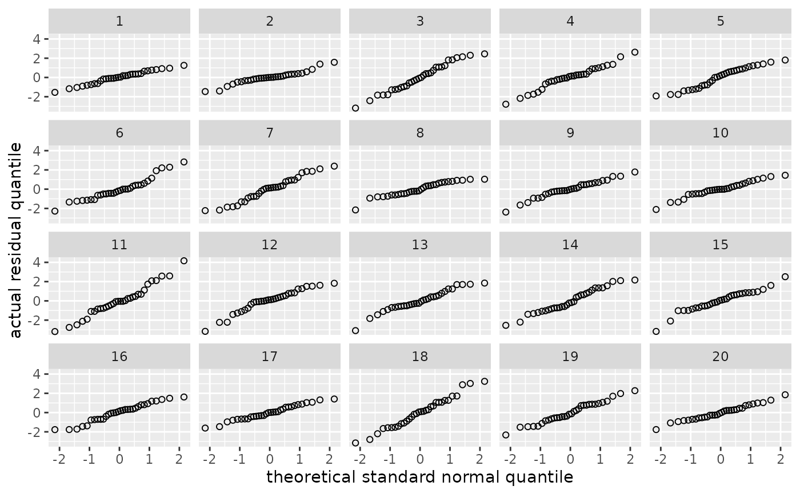
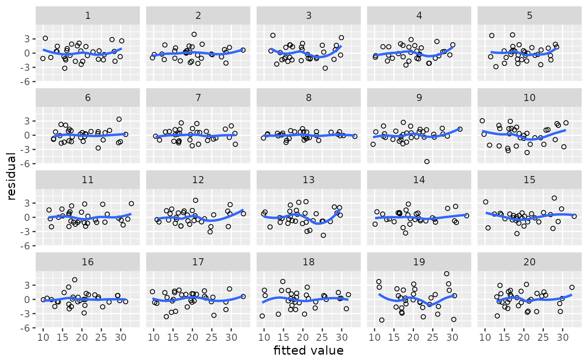
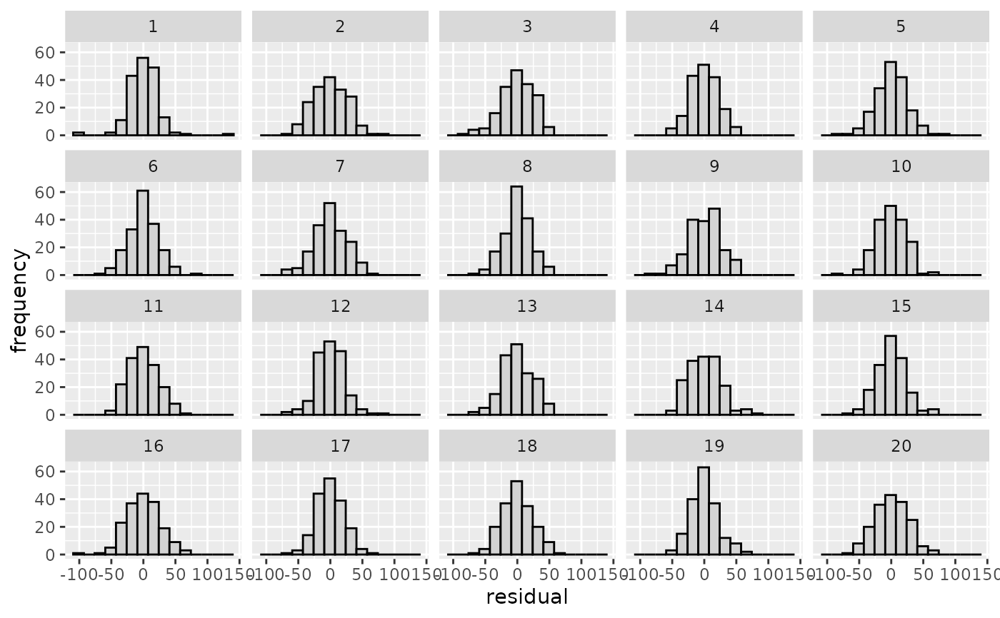

Generate dataset for a diagnostic parade
parade.RdThis function generates a parade (= lineup in the nullabor package)
that hides the observations, fitted values, and residuals of a statistical model you
want to diagnose among the observations, fitted values, and residuals of a number similar models
that were fitted on simulated outcome data. The sets of simulated outcome data are
generated from the original model so that this model's assumptions are literally true
for the simulated data. The 'tibble' (dataframe) created by this can be used to draw
panels of diagnostic plots (see examples).
Arguments
- model
The name of the statistical model you want to diagnose. Currently only
lm(),gam()(from the mgcv package) andlmer()(from the lme4 package) models are supported. For thelmer()models, only residual diagnostics are supported; support for BLUP ('random effects') diagnostics is still lacking.- full_data
By default, the output will only include variables that are part of the model. If you want to include all the variables that are present in the dataframe on which the model was fitted, supply this dataframe's name to full_data.
- size
The number of simulated and actual datasets that the parade will contain. This defaults to 20, meaning that the actual dataset will be hidden among 19 simulated datasets.
Value
A tibble containing predictors, outcomes, fitted values and residuals for both the real dataset and simulated datasets.
Transformed predictors
If you want to include transformed predictors in the model call (e.g., log(x)),
transform the predictor before using it in the model call (see examples).
This function relies on augment in the broom package. Since augment()
cannot handle model calls with poly() or ns(), parade() can't handle these, either.
(For lmer models, the augment function in the broom.mixed package is used.)
Examples
# A simple regression model
m <- lm(mpg ~ disp, data = mtcars)
# Generate parade and check linearity
my_parade <- parade(m)
my_parade
#> # A tibble: 640 × 7
#> disp mpg .fitted .resid .abs_resid .sqrt_abs_resid .sample
#> <dbl> <dbl> <dbl> <dbl> <dbl> <dbl> <int>
#> 1 160 24.9 23.3 1.64 1.64 1.28 1
#> 2 160 19.6 23.3 -3.71 3.71 1.93 1
#> 3 108 29.7 25.5 4.22 4.22 2.05 1
#> 4 258 18.6 19.1 -0.485 0.485 0.696 1
#> 5 360 13.9 14.7 -0.770 0.770 0.877 1
#> 6 225 22.6 20.5 2.10 2.10 1.45 1
#> 7 360 14.6 14.7 -0.0989 0.0989 0.315 1
#> 8 147. 22.9 23.9 -0.949 0.949 0.974 1
#> 9 141. 21.7 24.1 -2.44 2.44 1.56 1
#> 10 168. 18.6 23.0 -4.40 4.40 2.10 1
#> # ℹ 630 more rows
lin_plot(my_parade)
#> `geom_smooth()` using method = 'loess' and formula = 'y ~ x'

reveal(my_parade)
#> The true data are in position 5.
# Regenerate parade and check constant variance
my_parade <- parade(m)
var_plot(my_parade)
#> `geom_smooth()` using method = 'loess' and formula = 'y ~ x'

reveal(my_parade)
#> The true data are in position 20.
# Regenerate parade and check normality
my_parade <- parade(m)
norm_qq(my_parade)
norm_hist(my_parade)

norm_hist(my_parade, bins = 10)

reveal(my_parade)
#> The true data are in position 1.
# If you want to include all predictors in the dataset in the parade:
my_parade <- parade(m, full_data = mtcars)
my_parade
#> # A tibble: 640 × 16
#> cyl disp hp drat wt qsec vs am gear carb mpg .fitted
#> <dbl> <dbl> <dbl> <dbl> <dbl> <dbl> <dbl> <dbl> <dbl> <dbl> <dbl> <dbl>
#> 1 6 160 110 3.9 2.62 16.5 0 1 4 4 16.8 22.0
#> 2 6 160 110 3.9 2.88 17.0 0 1 4 4 14.4 22.0
#> 3 4 108 93 3.85 2.32 18.6 1 1 4 1 26.6 24.0
#> 4 6 258 110 3.08 3.22 19.4 1 0 3 1 13.8 18.2
#> 5 8 360 175 3.15 3.44 17.0 0 0 3 2 8.69 14.2
#> 6 6 225 105 2.76 3.46 20.2 1 0 3 1 17.9 19.5
#> 7 8 360 245 3.21 3.57 15.8 0 0 3 4 21.9 14.2
#> 8 4 147. 62 3.69 3.19 20 1 0 4 2 17.4 22.5
#> 9 4 141. 95 3.92 3.15 22.9 1 0 4 2 17.6 22.7
#> 10 6 168. 123 3.92 3.44 18.3 1 0 4 4 24.1 21.7
#> # ℹ 630 more rows
#> # ℹ 4 more variables: .resid <dbl>, .abs_resid <dbl>, .sqrt_abs_resid <dbl>,
#> # .sample <int>
# If you want to generate a parade with 50 instead of 20 plots:
my_parade <- parade(m, size = 50)
norm_qq(my_parade)

# The function also works for generalised additive models fitted with mgcv:
library(mgcv)
m.gam <- gam(mpg ~ s(disp) + wt + s(qsec), data = mtcars)
my_parade <- parade(m.gam)
lin_plot(my_parade)
#> `geom_smooth()` using method = 'loess' and formula = 'y ~ x'

my_parade <- parade(m.gam)
norm_qq(my_parade)

m.gam <- gam(mpg ~ te(disp, qsec) + wt, data = mtcars)
my_parade <- parade(m.gam)
lin_plot(my_parade)
#> `geom_smooth()` using method = 'loess' and formula = 'y ~ x'

# And has some limited support for lmer() models (from the lme4 package)
library(lme4)
#> Loading required package: Matrix
#>
#> Attaching package: ‘Matrix’
#> The following objects are masked from ‘package:tidyr’:
#>
#> expand, pack, unpack
#>
#> Attaching package: ‘lme4’
#> The following object is masked from ‘package:nlme’:
#>
#> lmList
m.lmer <- lmer(Reaction ~ Days + (Days|Subject), data = sleepstudy)
my_parade <- parade(m.lmer)
norm_hist(my_parade, bins = 15)

# Support for diagnosing the BLUPs would be nice.
# Transformed predictors:
# This won't work:
# m <- lm(mpg ~ log2(disp), data = mtcars)
# my_parade <- parade(m)
# This will:
mtcars$log2.disp <- log2(mtcars$disp)
m <- lm(mpg ~ log2.disp, data = mtcars)
my_parade <- parade(m)